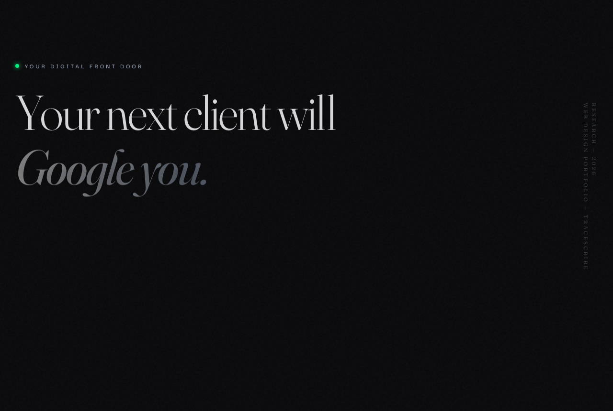

Cardiovascular CRO Website
A conversion-focused marketing site for a cardiovascular CRO, written by someone who knows the science it sells. One set of clinically-literate content, four complete design directions. The kind of site a general web studio can't write, because it does not know what a cardiologist trusts or what a sponsor needs to see.
What it does
A CRO marketing site where the content is the hard part, not the styling. Selling a contract research organization means speaking to cardiologists, sponsors, and regulators at once, and saying the right true things in the right order. That is a domain problem before it is a design problem. The four design directions then prove the same clinically-literate content can carry very different aesthetics without losing its accuracy.
Why clinical fluency matters here
- A generalist writes "cutting-edge cardiac solutions." A clinician writes the endpoint, the patient population, and the therapeutic area in language a medical monitor respects.
- It leads with the proof points a sponsor actually shortlists on: therapeutic experience, data quality, timelines, regulatory track record, not stock-photo trust signals.
- It keeps claims on the right side of the line: no overstated capability, no efficacy language that invites a second look.
- It writes for three readers at once, the investigator, the sponsor, and the patient, so each finds what they came for.
How it works
- A gallery landing page links to four complete themes: Clinical Evidence, Organic Flow, Natural Authority, and Holographic Deck.
- Each theme reimagines the same cardiovascular-CRO content with its own typography, palette, and motion, the content stays accurate while the aesthetic changes completely.
- Pure static HTML, Tailwind via CDN and vanilla JS, no build step.

Static preview - click to open the live, interactive demo